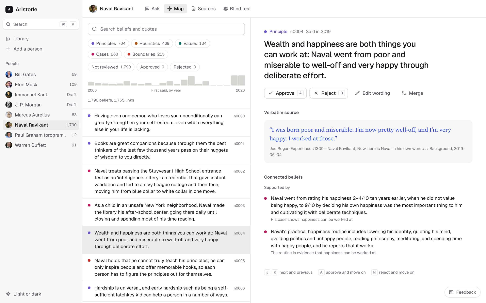
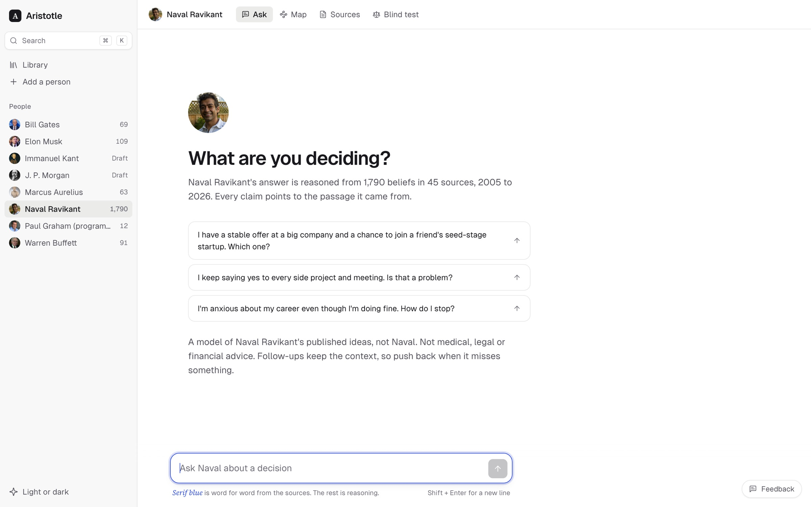

Think it through with the people you trust.
Bring a real decision to a thinker you admire. Aristotle answers from their own published words, and every claim links to the passage it came from.
Aristotle is a Mac app. Open this page on a Mac with Apple silicon to install it.

Provenance you can see
Blue means they actually said it.
Aristotle reads a person's books, essays and interviews and pulls out what they believe. A belief stays only if its quote is found word for word in the source.
- Quotes are checked, not generated. Anything in serif blue is copied exactly from a source. Everything else is reasoning, and it looks different.
- Tension shows up. When their beliefs pull in different directions, the answer says so instead of picking one.
- It says “not covered.” If they never wrote about it, Aristotle won't make something up.
Wealth and happiness are both things you can work at.
“I was born poor and miserable. I’m now pretty well-off, and I’m very happy. I worked at those.”
Naval Ravikant on The Joe Rogan Experience #1309, 2019
Serif blue is word for word from the sources. The rest is reasoning.
Add anyone
Search for a philosopher, founder or scientist. Aristotle searches for their own words everywhere: books, essays, speeches, letters, papers and talks. Add your own links, files or an X archive too.
Build their map
Claude reads the sources and extracts principles, heuristics, values and cases, plus how they connect. You see the cost before anything runs.
Ask about a real decision
An offer, a project, a hard conversation. Get an answer reasoned from their map, then push back. Follow-ups keep the context.
Ask
What are you deciding?
Describe the situation in your own words. The answer is reasoned from the beliefs that fit it, cited inline, with the source passages in the margin.

The map is yours to edit
Approve, reject, reword or merge beliefs with keyboard shortcuts. Rejected beliefs are never used again, even after a rebuild.
Runs on your Mac
Your library lives in ~/Aristotle. There's no Aristotle account and no server holding your questions.
Uses your own Claude
Reading and answering run through Claude Code on your Pro or Max plan. No API key and nothing extra to pay.
Councils
Put one question to several people at once. They answer, reply to each other, and you see where they agree and differ.
Worldview
A person's core beliefs, their themes, where they pull against each other, and how their views changed over the years.
Critique a draft
Paste a plan, pitch or essay. Their beliefs mark it up, every comment pinned to your words and cited.
Decision journal
Save a decision with the advice you got, then come back on the follow-up date and note how it turned out.
Ready-made maps
The Bhagavad Gita, the Gospels and the Quran, already built from public-domain translations. Add them instantly, with no plan use.
Keep up to date
Follow a living thinker and Aristotle checks weekly for new posts and talks, then reads them into the map.
Install
Up and running in a few minutes.
Download and drag to Applications
Open Aristotle.dmg and drag Aristotle onto the Applications folder.
Allow it to open, once
Aristotle isn't from the App Store, so macOS asks first. Open it, click Done, then go to System Settings → Privacy & Security and click Open Anyway.
Or in Terminal:xattr -dr com.apple.quarantine /Applications/Aristotle.appConnect Claude and pick your people
The first time it opens, Aristotle walks you through installing Claude Code (one line in Terminal), signing in with your Claude account, and choosing who to think with. Ready-made maps are ready to ask right away.
Needs a Mac with Apple silicon (M1 or newer), macOS 13 or later, and a Claude Pro or Max subscription.
Questions
Good to know
Is it talking to the actual person?
No. It's a model of their published ideas, not them, and it never claims otherwise. Answers describe what their framework suggests and quote only what they really wrote or said. Aristotle isn't affiliated with or endorsed by anyone in your library.
What does it cost?
The app is free. Building a map and asking questions use your Claude plan, the same as using Claude yourself. A new person starts with a small build (about 70 Claude calls), and every result is cached so nothing is paid for twice. Ready-made maps use none.
Does it work on Intel Macs, Windows or Linux?
Not yet. This release is for Macs with Apple silicon (M1 or newer).
Where does my data go?
Your library, maps, conversations and journal stay in ~/Aristotle on your Mac. Text is sent to Claude to read sources and write answers, under your own Claude account.
How do updates work?
Automatically. Aristotle checks for a new version when it opens and every few hours while it runs, downloads it in the background, and switches over the next time you open it. Updates are signed, and if one ever fails to start, it goes back to the version that worked. You only download from this page once.
Is it advice?
No. It's a way to think a decision through from someone else's point of view. It isn't medical, legal or financial advice.
Something's broken, or I have an idea.
Use the Feedback button in the bottom-right corner of the app. It goes straight to the person who makes Aristotle.